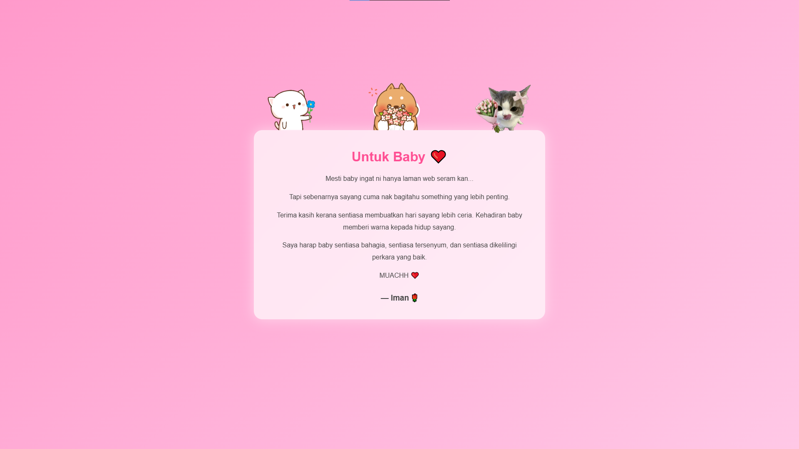
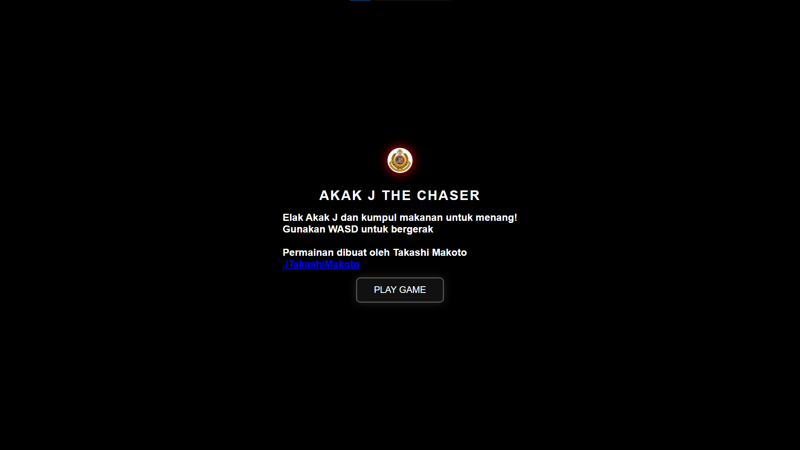
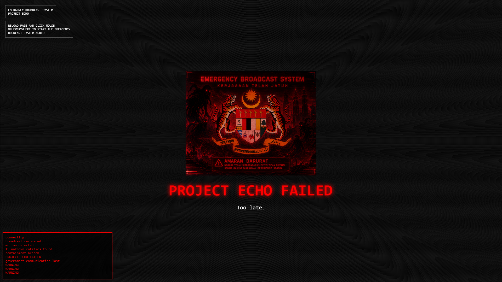
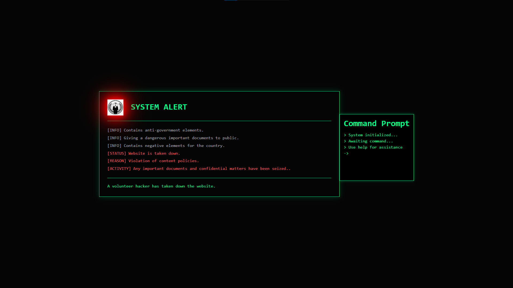

Post Terbaru

LoveLetter
Surat cinta yang ditulis oleh seorang pemuda untuk gadis pujaannya, penuh dengan perasaan tulus dan harapan untuk masa depan yang cerah. Walau mereka adalah dua agama yang berbeza, mereka tetap berusaha untuk menjaga hubungan mereka dengan penuh kasih sayang dan pengertian. Tapi surat ini dimulakan dengan tampilan yang menyeramkan.
Review Tampilan Dapatkan Letter
Akak J The Chaser
Pemainan kejar mengejar antara mat rempit dengan anggota JPJ, di mana mat rempit cuba untuk melarikan diri daripada JPJ yang mengejar mereka. Pemain akan mengawal mat rempit dan berusaha untuk mengelak daripada ditangkap oleh JPJ sambil mengumpul mata dan bonus sepanjang perjalanan.
Mainkan game Dapatkan Code
Takashi Music Store
Kedai menjual lagu-lagu yang dicipta oleh Takashi Makoto, tetapi menjadi misteri apabila tampilannya berubah menjadi Emergency Brodcast System berserta dengan suara brodcaster yang bunyi seperti robot.
Review Tampilan Daptkan Code
Web Taken Down
Tampilan web yang menunjukkan bahawa ia telah digodam dan diambil alih oleh pihak yang tidak bertanggungjawab. dan claim bahawa dirinya telah mengambil tugas cybersecurity untuk menghapuskan web tersebut.
Review Tampilan Daptkan Code